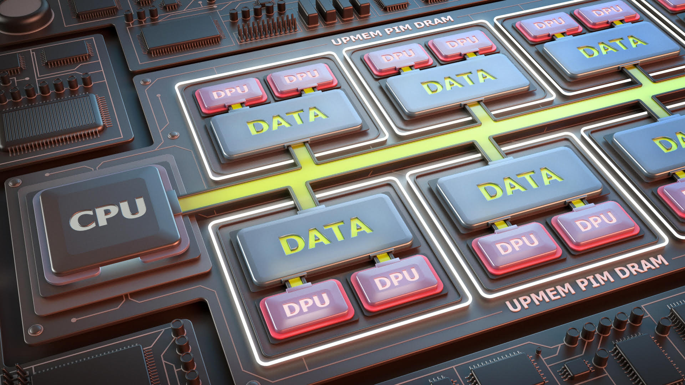
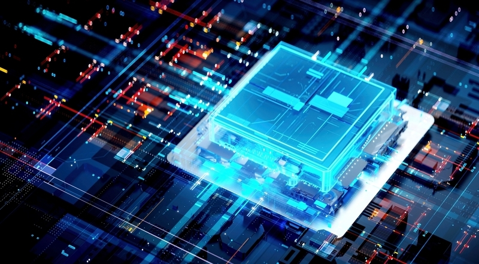
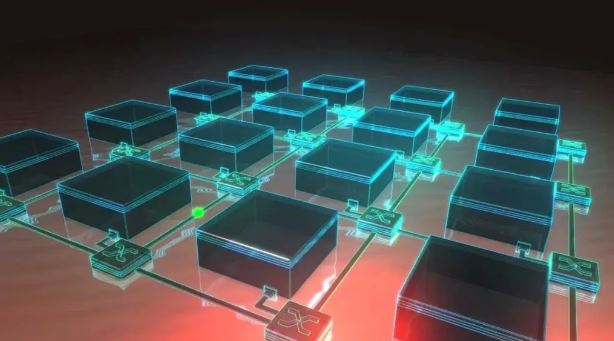

Research Area

Memory-Centric Computing
- Processing-in-Memory
- Near-Data Processing
- In-Storage Processing

Next Generation Memory
- Cache & TLB Architecture
- CXL / DDR5 Subsystem
- Memory Disaggregation

SoC On-Chip Network
- Multicast Routing
- Chiplet Interconnect
- Thermal-Aware Routing
- High-Bandwidth Interconnect